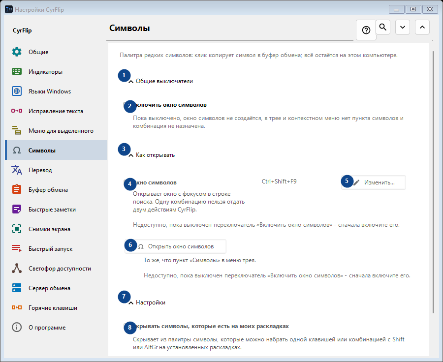
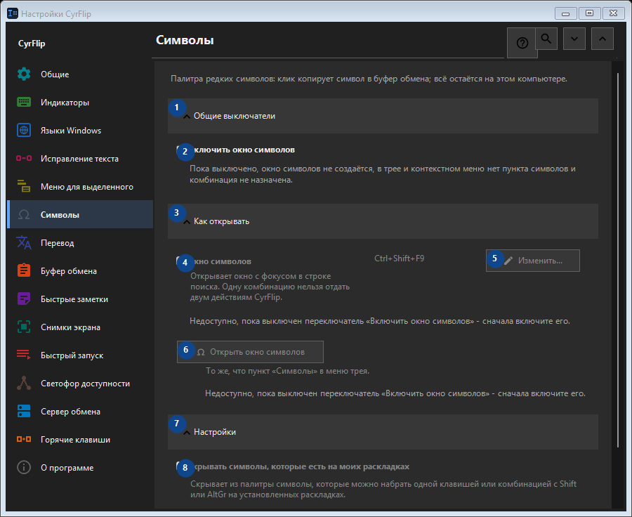

Символы
Для чего это окно
Палитра редких символов: клик копирует символ в буфер обмена; всё остаётся на этом компьютере.


Порядок действий
Настройки применяются сразу. Обязательного порядка нет; используйте группы ниже.
Элементы
1. Общие выключатели
Используйте команду, когда нужно указанное действие. Прочитайте запрос подтверждения перед согласием.
Ваши сочетания клавиш2. Включить окно символов
Пока выключено, окно символов не создаётся, в трее и контекстном меню нет пункта символов и комбинация не назначена.
Ваши сочетания клавиш3. Как открывать
Используйте команду, когда нужно указанное действие. Прочитайте запрос подтверждения перед согласием.
Ваши сочетания клавиш4. Окно символов
Недоступно, пока выключен переключатель «Включить окно символов» - сначала включите его. Элемент сейчас недоступен. Сначала включите функцию или выберите запись.
Ваши сочетания клавиш5. Изменить - Окно символов
Недоступно, пока выключен переключатель «Включить окно символов» - сначала включите его. Элемент сейчас недоступен. Сначала включите функцию или выберите запись.
Ваши сочетания клавиш6. Открыть окно символов
Недоступно, пока выключен переключатель «Включить окно символов» - сначала включите его. Элемент сейчас недоступен. Сначала включите функцию или выберите запись.
Ваши сочетания клавиш7. Настройки
Используйте команду, когда нужно указанное действие. Прочитайте запрос подтверждения перед согласием.
Ваши сочетания клавиш8. Скрывать символы, которые есть на моих раскладках
Недоступно, пока выключен переключатель «Включить окно символов» - сначала включите его. Элемент сейчас недоступен. Сначала включите функцию или выберите запись.
Ваши сочетания клавиш